Creating effective Opera Extension icons
From Opera 15 onward, Opera 11 & 12’s extension format is no longer supported, and instead, we’ve switched to Chromium’s extension model. Check out our new documentation for developing extensions for Opera 15 and higher and start building your own extensions.
Table of contents
Introduction
This article provides a tutorial and some hints and tips on creating effective icons for your extensions. I've put the hints and tips at the beginning so you can easily refer back to them; the tutorial then follows.
Downloading and using the icon template
You should download our icon template if you want to follow along with the tutorial, or if you just want to speed up your own icon creation work.
There is also an extension icons screencast available covering how to use the Inkscape template. Watch this for more details: Extension icons screencast WebM version | Extension icons screencast MP4 version.
{kind=link}
Quick hints and tips
Branding and simplicity
Your icon should be simple and effective, and it should reflect your extension's style and purpose. A simple image or letter from a simple font works well, but detailed images and intricate fonts do not. A game will benefit from having a playful, colorful icon, whereas a more serious application may be better served by a more conservative and functional icon. Your icon should be consistent with the branding and colors of your extension. Figure 1 shows some good examples.

Figure 1. Simple, elegant, playful icons.
Less is more
A unique shape or silhouette will help users to identify your extension. Combining objects or shapes is generally not advised, as this tends to complicate your icon, diminishing its effectiveness (see Figure 2.) Imagine that the shape has a physical weight. When centered on a pillar, the icon should not tip to the right or left; it should balance. Do not apply a shadow to outline shapes. Instead, put the shape on a background.

Figure 2: A single, centered shape communicates better than combined shapes. Unbalanced icons are visually troublesome.
Beautiful icons
Consider getting a professional graphic designer or illustrator to help you create your icon. If you aim for realism by making an icon that represents a real life object, it is advisable to use a single light source located directly above the object. The perspective should be either straight on for flat objects like picture frames and windows, or slightly above - as if the object were sitting on your desk, producing a shadow directly below the object. Colours help the user to identify the icon's significance, but should not be used to grab attention. Gradients should be conservative and smooth. See Figure 3 for a good example versus some not so good ones.

Figure 3: The perspective should be that of an object sitting on the desk in front of you. The lighting is above and slightly in front of the object, creating gradients and shadow.
Do not use system icons or other application icons in your work - see Figure 4 for some examples.

Figure 4: System icons or icons from other software vendors are not allowed.
Scaling
Reducing the size of a bitmap image results in a loss of information. Details will gradually disappear, and it is often necessary to simplify the icon quite a bit to make it stand out. You should therefore start with the largest icon size you can and scale down to create smaller sizes - see Figure 5. Depending on the icon design, some effort should be made towards sharpening and simplifying the icons. The example in this case is not really that bad, and would pass, but the quality improves with some extra effort.
As you scale an icon down, details may end up in between pixels. Think of the pixels as a mosaic. If you need to draw a tiny dot, you cannot move the mosaic tiles to fit where you want the dot. You must either move the dot slightly, or make the surrounding tiles imply there is a dot by coloring all of them. This last approach is common to all graphics software, and it will make the dot appear blurry or unsharp. If your icon loses sharpness, you should consider redrawing it: tweak your design to align with the pixel grid or remove details to simplify the information.

Figure 5: Starting from a big icon design, scaling down to 64x64 pixels should not yield many problems. When scaling further, the details get lost and the edges get blurry.
To create an acceptable set of icons, you can use the Icon creator. Note that your extension may be rejected if your icons are of poor quality.
Note that Interlaced PNG-files are currently not supported, due to a limitation of the image library we're using. Avoid this effect in your screenshots.
Icons for high density screens
From Opera 12.10 onwards, you can make extension icons which would look great even on high density screens (for example 'Retina displays' etc). All you need to do is to take that high density extension icon, and attach the suffix '@2x' to its name. So if the normal icon is named 'icon.png' then the high density icon will be named 'icon@2x.png'. Opera will look for the '@2x' suffixed icon file in the extension package and will use that in case it finds it.
For the extension manager icon, the browser will check the config.xml file that can contain multiple <icon> tags with different sizes of the icon. To see how to support high density icons for the extension manager panel, please see the config.xml guide regarding the <icon> element.
Problems and solutions
- Horizontal and vertical lines should be aligned with the pixel grid, and look sharp.
- Opera adds a button to the icon in the UI. It should fit, and not look unbalanced.
- The requirement of clean lines does not imply pixel art. Angled lines or curves should be anti-aliased, unless pixel art is intended.
- If the icon disappears because it has a problematic color, it should have a frame of sorts, such as a roundrect button shape background.
- Icon shapes should fill the space allotted to them. Too much padding is not good. Consider adding a background.
Requirements
- Icons should be scaled nicely (no deformation, blurring or loss of intended details).

- Icon edges should be clean (no blur on straight lines and no pixeled corners).

- Icons with transparent backgrounds must be centered. The icon must not conflict with the Opera UI button.
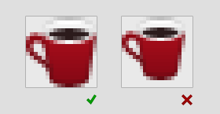 - Icons should be anti-aliased or perfectly pixelated.

- Icons must not be completely white, and must not lose their coherence on a white background or on the Opera toolbar chrome.
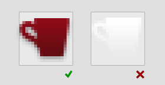 - Icons should have a background or fill the space allotted to them. They should not occupy much less than 85% of the field.
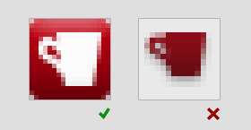
Photoshop: Icon tutorial
Note: Even though this tutorial is written with Photoshop in mind, you can still get some useful tips if you decide to use a different graphics package.
First of all, open the Photoshop (PSD) icon template and save it with a different filename. You can work on your own icon inside this file. This tutorial is written with complete beginners in mind, but even Photoshop veterans may be able to pick up a thing or two.
Selecting an icon
You don't need to be able to draw to create a good icon shape. The best thing to do is cheat, and select an icon shape from somewhere like a freeware site on the Web, or better still, the Webdings font that is available on pretty much all computers, see Figure 6. For this tutorial, I am using the Webdings letter "i".
 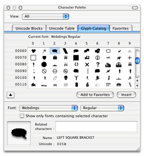
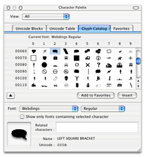
Figure 6: The Webdings font cheats you right through the laborious task of creating something unique.
The icon shape layer
After selecting the glyph you want from the Webdings font, select the "Text Tool" inside Photoshop, as seen in Figure 7.

Figure 7: Find the "Text Tool".
Make sure you have the "icons" layer group selected and click anywhere to start writing. the easiest way to get the icon you want is to copy and paste the letter from the character palette (Figure 6) and paste it into the text box. Depending on the graphics package used, you might have to apply the webdings font to the text again. Figure 8 shows the font applied.

Figure 8: Use a font for quickly applying an icon shape to your icon.
An elegant and proven way of making your icon look professional is to make it white on a colored background. Since this template is all about simplicity and premade backgrounds, I strongly suggest you stick with this too, for now.
In order to tweak your icon shape, you'll need to make it a vector shape layer. From the "Layer" dropdown menu, select "Type" and "Convert to Shape" (the same can be achieved by right/Ctrl + clicking the type layer). This will make the letter, or in this case icon, into an editable vector shape with bezier curve points for you to play with. Figures 9-11 show this process.
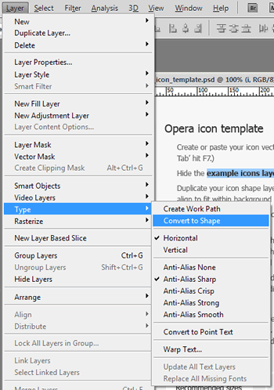
Figure 9: Converting the text to a vector shape will provide you with a fine grained control of it.
Figure 10: An enlarged view of your webding turned vector shape.

Figure 11: Your shape layer will now look like this. You can no longer edit the content with the text tool, but you can alter the shape of it.
Pixel sharp vectors
Now that you have an icon that you can work with, you need to place it and make it the correct size (see Figure 12). First, drag it over the 64 px background shape with the "Move Tool", then select "Edit > Free Transform" (or hit Ctrl/Cmd + T) to make it just right. Make sure you have zoomed your view (Ctrl/Cmd -+) enough to clearly see what's going on. While you can drag the corner or side boxes of the transform selection, I recommend you use the input fields up on the tool bar instead. This will ensure you hit whole pixel values thereby giving you an overall much higher level of control.
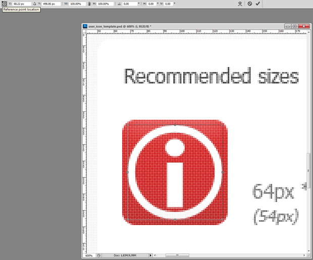
Figure 12: Placing the icon shape on the background shape with the 'Transform' tool.
First, you want to change the point from which the orientation of the icon shape is made. In the little 3x3 grid with a black box in the center, hit the top left corner box. This will make Photoshop orient your shape from the top left corner and is a bit easier to work with than the alternatives. Your icon is probably not placed on a whole pixel value on the x- or y-axis — Change this now by rounding the "X:" and "Y:" values up or down.
In the next fields, "W:" (width) and "H:" (height), you should also input whole pixel values. By default these fields are set to percentages, so you have to right click both of them in turn and selext "pixels" from the dropdown. If you want to, you can click the little chain icon between the fields to maintain the aspect ratio of your icon, but in this example the values need to be set individually. Round your values up to a whole, preferrably even number such as 54 px. As a rule of thumb, I first scale the widest aspect to the desired size with aspect ratio locked, then release it and tweak the narrow aspect if needed. Usually pointy or curved sides can do without a perfect fit, while straight edges need a bit more precision.
When you're happy with the size (Figure 13 shows a good set of values), go back and center your icon shape on the background using the input fields. You should now see why even numbers are preferred.
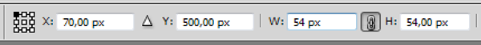
Figure 13: The rounded values make sure your shape is placed nicely on the pixel grid.
Pixel sharp vectors, Part 2
Zoom in a bit more, then look at your icon shape. It should be awful, because the other vector shapes are not matching the grid, giving a blurry look, as seen in Figure 14. Let's deal with this.

Figure 14: The icon details are not matching the pixel grid.
With the "Direct Selection Tool" selected, click the corner vector points of the stem of the "i" shape. If for some reason you cannot select it, you might have an underlaying shape selected, in which case select your shape in the 'Layers Tab' instead. When you have all the corner points selected, simply repeat the process of free transforming by inputting values. Press Ctrl/Cmd + T, select the upper left reference point location, input whole numbers and hit Enter/Return on your keyboard.
Bam! That is so much better. Because those straight lines now perfectly fit the pixel grid, the shape will be sharp as a knife. As for the inside of the curved shape (the inside of the O), I'd ignore it. The benefit of tweaking this is not worth the work. But the dot can easily be altered for some extra bonus points, so let's go on repeating the process for that one (see Figures 15-16). Consider it a good exercise if nothing else.
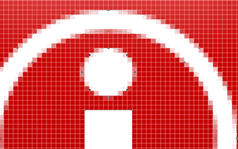
Figure 15: Select the vector points of the dot ...

Figure 16: ... and make it fit the grid.
Small icons
For the 64x64 px icon you can get away with not treating the pixels as carefully as described here, but for understanding the following it is easier if you're a bit familiar with the shapes making up your icon. Let's start by duplicating the icon shape layer (hold the Alt key while dragging the icon with the "Move Tool" active). Next, free transform the layer shape (Ctrl/Cmd + T) to 18x18 px (See Figure 17).

Figure 17: Duplicate the icon shape layer and move and scale it to fit the 18 px background shape.
Zoom in on that new icon shape, and you'll see that there is certainly work to do! Don't lose heart — the nice thing about working with vectors like this in Photoshop is that the Bézier curves tell you how the shape would have looked at a higher resolution, while the pixel mosaic tells the hard truth. In our case, we can see from the 64 x 64 icon that the dot of the "i" is slightly wider than the stem. Deciding whether to keep a feature like this or not must be decided upon for the individual shape, but in this case it's useful to know.
But before we proceed go to "Edit > Preferences > Guides, Grid & Slices". Change the values for "Gridline Every" and "Subdivisions" to 10 pixels. You can now snap to the pixel grid by viewing it ("View > Show > Grid") and making sure snapping is turned on ("View > Snap to > Grid"). This is useful because we're doing stuff a bit differently now. There's nothing wrong with the free transforming process, so if you prefer this skip ahead, but I would advise this alternative method for smaller, more precise work.
With the "Direct Selection Tool" selected (the white arrow), select the corner points and move them to pixel corners. You can fix most things using this technique, although I'd suggest leaving the oval dot to be treated with the free transform technique as this easily distorts.
I mentioned earlier the benefit of knowing your icon shape inside out, and this is evident in the dot in this case. If it's scaled to be perfectly round and as wide as the stem, it vanishes in a blur. By being true to the original design and benefitting from its qualities, the dot is better left half a pixel wider on each side. While not knife sharp, this is as good a result as you can hope for at this resolution.
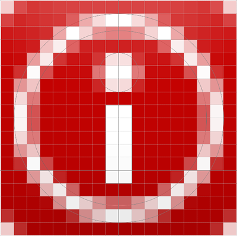
Figure 18: Final small icon.
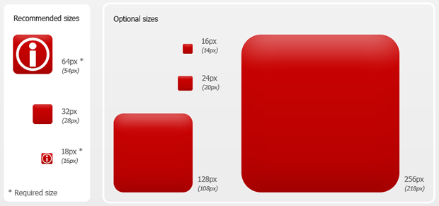
Figure 19: The icon shapes are finally tweaked and in place.
The palette
To make your icon interesting, it should have a nice colour, with a subtle gradient. A colour palette is provided in the template — click on the gradient you wish to try, and notice that the layer this gradient sits on has been selected in the layers panel. Right/Ctrl + click the blue area of that layer and select "Copy Layer Style". Paste this gradient by selecting the background shape layers you wish to apply it to, Right/Ctrl + clicking the blue area of those layers and selecting "Paste Layer Style". You can select multiple layers and have all of them affected at once if you wish.
 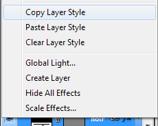
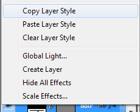
Figure 20: Copying the layer style of a palette gradient color.
Your icon should now look something like this and be ready for export:

Figure 21. Final icons ready for export.
Exporting the icons
Hanging in there? This last part is very easy, as all the hard work is already done. First, simply hide the background layer by clicking the little eye icon next to it. Next click "File > Save for Web & Devices..." (Ctrl/Cmd + Alt + Shift + S) and select the two icons you just made. It's a bit hard to see what's selected or not, but selected items get a brown border. Click "Save" and give your icons a fitting name. Make sure to select a proper folder and select "Slices: Selected Slices" in the dropdown. Hit "Save", and you're done!
This article is licensed under a Creative Commons Attribution 3.0 Unported license.
Comments
The forum archive of this article is still available on My Opera.
-
One of the problems is, that 18px don't scale good to 32 or 64px², vice versa. I ended up with 2 different vector shapes I had to align to the grid to cover all bases (horizontal and vertical lines are problematic, curves and diagonal lines are easier).
-

Why is myoperamail disabed
No new comments accepted.QuHno
Sunday, April 8, 2012
In the advent of the extensions for Opera Mobile it becomes even worse: To avoid the icons to become blurry, especially the visible extension's push button, you have to provide various sizes - at least additional 48px² - but until now there seems to be no mechanism to provide various icons to the different UAs...
(... consider this as a wish ;) )
Salami nurudeen.A
Tuesday, September 11, 2012